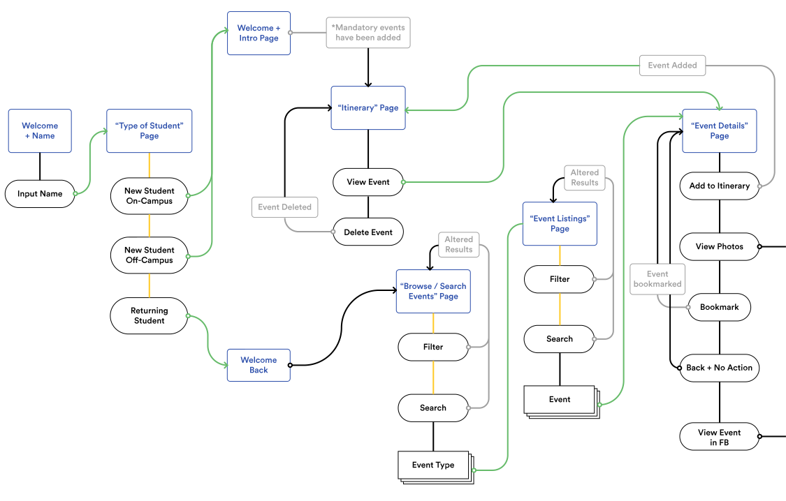

Before creating the mid-fidelity mocks, I first needed to create a user task flow chart to understand how users would complete a task. Doing this early allows me to minimize wasted time mocking a screen that has no place or effect in the flow.
When browsing events, users typically do not have a specific event in mind; thus I created a more exploratory approach to finding events. They will have access to a large list of events within an “event type”. From there, they first filter by date, and if needed, apply a search criteria. I want to purposefully make search feel like a secondary function to allow users to explore.

Students felt overwhelmed when looking at the weeklong preplanned GBO schedule, worrying about if they are going to make it to every event or the consequences of missing a mandatory event. With the scheduling screens, I wanted to reduce the magnitude of the plans, by showing activities in a “day-by day” format. When thinking about user interactions, I created a system of tapping to switch days, and using a swipe to delete events. My initial mock ups were modeled after a to-do list, showing only time stamps with relevant/existing events, but this created issues with overlapping events and double booked events.

When designing the detail screens, I wanted to create an emphasis on decision making logistics and placing them at the forefront. These include characteristics such as: conflicts with mandatory GBO event or open to all students.